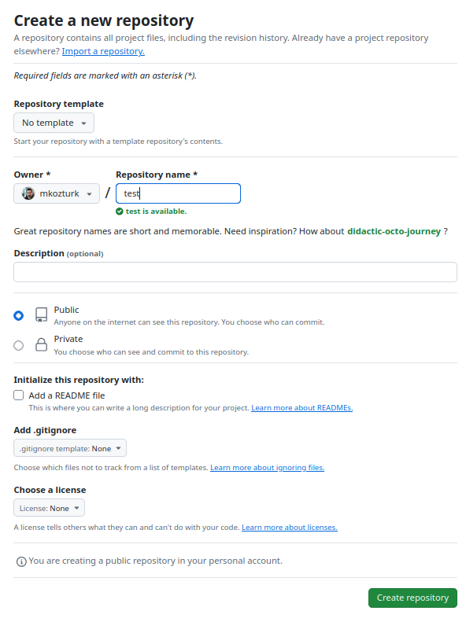

You are a data scientist beginning with a new task. You think it through, decide on the models you’re going to try, establish your data sources. You are ready to start coding.
How do you start?
Maybe you launch a Jupyter notebook, import your libraries, and start hacking away. But, after you complete the task, what do you do with this huge notebook? Usually our work is in the middle of a chain of tasks. A machine-learning model or a data transformation module takes input from other software, sends output to some other piece of software.
If you structure your code in a more software-engineering-friendly way, these connections may become easier to establish. Also, your code and analyses will be better organized and reproducible.
I come from an academic background. Programs I wrote in my academic career were limited in scope, and only to answer a specific question. When I switched careers, I had to think about how to set up a software project, and ask around. I know that there are quite a number of people like me, so I’d like to share some ideas that worked for me.
Here are my steps for starting a data-science project:
- Create the project directory and subdirectories
- Create a virtual environment
- Push into GitHub
Depending on your work flow, there may be other steps, such as setting up a Dockerfile to dockerize your project, or configuration files for cloud services like AWS. I won’t discuss them here.
I use Linux, and the following examples use Linux terminal. I’m unable to describe these steps in other operating systems. If you use Windows, you should look up the exact commands for the tasks described here.
What is a “project”?
Early in my work as a data scientist, a seasoned SW engineer had told me “just use a virtual environment for each project”. That was puzzling for me. What is my project?
For me, the word “project” had a grand aura around it. A project would take a long time, maybe years. It would involve many people, led by a project manager. My daily work was far from that. I was just writing some Jupyter notebooks, producing source files, generating graphics for presentations. So, when my boss asks me to do a forecast of sales, how is that a “project”?
My confusion cleared up when I realized that a project doesn’t have to be a big thing, like a skyscraper, or an operating system. In fact, any task with a clear outcome and clear constraints is a project.
So, writing a program to forecast next year’s sales and generating a report is, indeed, a project. Creating a dashboard that queries the database daily and displays a graph of sales is another.
You need to specify when you will be done with a project. For example, “researching the applications of LLMs in our market” is not a project, because you can never say that research is done. When you take up on a task, think about what the outcome should be, and set the boundaries of your project accordingly.
The SMART criteria of goal-setting can be relevant here. I find them hard to follow to the letter, but they are useful guidelines. You should try to understand the spirit of them.
Decide on what the outcome of the project should be. With that decided, you know where to go and, more importantly, when to stop. Personally I have a hard time wrapping up projects, so I try to put clear stopping criteria up front.
The project directory
Software engineers advise having a dedicated directory for every project. I think this is useful. The project directory holds not only the source code, but other relevant files too, such as data, configuration files, documentation, or the environment. This means, you should not put all your code and scripts in a single big directory. The project directory must contain only files that are within the scope of the project.
Here’s a typical project directory and subdirectories that I create when starting a project:
my_project
├── notebooks
├── README.md
├── requirements.txt
├── scripts
├── src
└── pyproject.tomlHere src holds some source code associated with the project. Jupyter notebooks live in notebooks and they import code from src.
Initially, you can work with Jupyter notebook for developing your code. However, as the algorithms mature, you should refactor the code into a reusable module and put it into src. This way you can avoid repeating yourself and having several versions of the code, which may cause confusion later on. More importantly, you will develop a code collection that you may import in your scripts, notebooks, and other programs.
scripts may or may not be necessary. This directory holds some programs that import modules from src. These can be used for repeating tasks, such as generating a report, or downloading data.
requirements.txt holds a list of packages installed in your virtual environment. It is necessary to recreate the environment when necessary. We discuss virtual environments below in more detail.
README.md is a Markdown-formatted text file that stores a description of your project. This is the standard name used by GitHub to display relevant information about your project.
pyproject.toml configures your project as an installable Python package. More on this in a follow-up post.
Depending on your needs, you can add more. For example, a data directory for storing raw data, Dockerfile for dockerizing your project, a models directory for trained and pickled models, or a reports directory to store generated reports.
What about one-time analyses?
More often than not, a data scientist generates an ad-hoc analysis for a specific question: Detailed breakdown of sales in a specific branch, effect of weather on the use of our service, estimated revenue loss due to power outage in a store, etc.
Work like these do not require their own directory, virtual environment, or GitHub repository. Instead, I put them into a single directory named adhoc_reports. This directory has its own virtual environment, and its own repository. Essentially, I treat the collection of reports as a single project.
Here is a sample directory:
adhoc_reports
├── adhoc
│ ├── __init__.py
│ └── utils.py
├── html
│ ├── 2025-01-03 Sales Report.html
│ ├── 2025-01-04 Sales Report.html
│ └── 2025-01-04 Customer Analysis.html
├── notebooks
│ ├── 2025-01-01 My awesome analysis.ipynb
│ └── 2025-01-02 Some visualizations.ipynb
├── README.md
├── requirements.txt
├── scripts
│ ├── generate_sales_report.sh
│ └── generate_customer_analysis.sh
└── pyproject.tomlcookiecutter-datascience?
Many people use the cookiecutter-datascience template to set up a data-science project. It is popular among developers and data scientists, and I used in a few projects of mine. It incorporates a lot of good ideas, guiding you toward better automation of data collection and processing. I strongly recommend everyone to look through the template, read the Opinions and understand the structure thoroughly.
Personally, I find this template difficult to use and maintain. It has many nested subdirectories, it is a hassle to navigate through them, and the purpose of each directory is not always clear.
cookiecutter-datascience might be useful once your project reaches a certain level of sophistication; keep it in your radar. However, for projects I have done so far, a simpler structure turned out to be sufficient.
Use a virtual environment
A virtual environment (venv for short) is a collection of packages in your project directory. When you use a virtual environment, you launch a copy of the interpreter in that collection, instead of the one in the system. This interpreter then uses only the packages in the environment. Effectively, a virtual environment is an isolated Python installation.
After creating the project directory, I go into it in the command shell, and create a venv there:
$ python -m venv .venvThis command runs the Python module venv and creates a set of files under the .venv subdirectory. This subdirectory contains the library modules, executables, and other files necessary for a full-fledged Python system.
$ tree -L1 .venv
.venv
├── bin
├── etc
├── include
├── lib
├── lib64 -> lib
├── pyvenv.cfg
└── shareThe name of the environment subdirectory is arbitrary. You can name it venv, projectenv, or anything else you want. I prefer .venv because the preceding dot makes this a hidden directory, That way it does not clutter the directory listing.
After that, you need to activate the virtual environment.
$ source .venv/bin/activateThis command usually changes the command prompt to include the environment name, so you’ll know which environment you’re using.
(.venv) $With the environment active, you can begin installing packages with pip
(.venv) $ pip install ipykernel numpy pandas scipy matplotlibI use an alternative method to install modules. I prepare a file named requirements.txt storing the names of all the modules I want to install, one in every line.
# requirements.txt
ipykernel
numpy
pandas
scipy
matplotlibThen, all I need is to run the following command:
(.venv) $ pip install -r requirements.txtand pip installs the modules all at once.
Whenever I need to install a new package, I just add it as a new line in requirements.txt, and run the command again.
As a general rule, virtual environments must be regarded as disposable. With a requirements.txt file in place, you don’t need to remember which packages you’ve installed. You can create the entire environment with a single command.
Initially, I didn’t like having a separate environment for every project. It seemed like an unnecessary duplication of packages. I used a single global environment for all tasks. That caused two types of problems for me:
When you add a new package, the package installer (
piporconda, or whatever you use) needs to check its compatibility against all existing packages. If you have too many packages, this may take a long time. The more packages you have, the higher is the probability of non-compatibility.Some packages may require an older version of some existing packages and remove the newer versions. That may cause trouble with your existing programs relying on the newer version.
In time, my global environment became a mess. I realized that a local virtual environment is the best solution.
If you are concerned about the disk space, you can just delete the .venv directory of projects you don’t use. When you need to, you can always recreate it with:
$ python -m venv .venv; source .venv/bin/activate; pip install -r requirements.txtThese are just the basic steps I use in a typical setup. For more details on virtual environments, see Python Virtual Environments: A Primer by Martin Breuss on RealPython.
Push to a Github repository
git is the currently accepted standard tool for version control of software projects, and GitHub is the most common web platform for sharing software projects.
git allows you to keep track of all changes in your code, and revert them to a previous state, if necessary. More importantly, it is designed for collaborative software development. When people work on different parts of a project and combine their work, they may end up with many problems, inconsistencies or clashes. git does not fix the problems for you, but it helps you to correct them, or completely avoid them.
If you are just starting out and working by yourself, you might find git unnecessary. Still, some understanding of git is valuable even if you are not in a software team:
- You are going to use git eventually, so you better make yourself familiar with it.
- Publishing your project on GitHub makes your work visible.
- Github is a free backup service for your project. If you delete your project from your laptop, you can download it again anytime.
- It can be used for other collaborative works, such as an academic research paper.
- There are many services built around GitHub. You can use Binder to run your notebooks interactively in the cloud, or you can use Github Pages to host a static web site for free.
Initialize git in your project folder
$ git init
$ git branch -m mainThe second command renames the current branch to main. The default name is master, but this is considered offensive now, and GitHub uses main by default.
Create a file named .gitignore in your project file. This is a simple text file that holds the list of files and directories that should not be tracked by git. In particular, we want to ignore .venv directory. This one holds the packages installed for the virtual environment. It is too large, with hundreds of files. This is an unnecessary burden for git, because the virtual environment can easily be recreated.
$ echo /.venv/ > .gitignoreAdd all your files and folders (except for those in .gitignore) to the staging area:
$ git add .Now you can create a snapshot of your files which git will store. This is called a commit. Git requires a message with every commit, which summarizes the nature of the latest change.
$ git commit -m "first commit"Now you have a local source-control system on your computer. As you develop your code and add new files, you can repeat the commands above to update the repository.
Usually you want to synchronize this repository with the web, though. This is what GitHub is for.
Create a repository on the GitHub web page. You’ll need to create an account, if you don’t have one already. Just fill in the “Repository name” and click “Create repository”

Now connect your local repository to the remote repository with the command
$ git remote add origin <repo-url>Finally, synchronize the current git state with the remote repository:
$ git push origin mainWhen you visit the GitHub page, you’ll see that the files are updated in the remote repository.
If your remote repository is created with some files (such as README.md or .gitignore) with different contents, this command will cause an error saying “fatal: Need to specify how to reconcile divergent branches.”
To fix this, first run the command:
$ git pull origin main --rebasefollowed by
$ git push origin mainIf a version of a file is more recent in the remote repository, you pull it to your local repository with:
$ git pull origin maingit is a very powerful tool. Most programmers use only a small subset of its abilities. A web search for “git for beginners” will return many resources. Choose one that is suitable for you.
Many common IDEs such as VSCode or PyCharm have plug-ins for git. With these, you can perform most common source-control tasks by clicking on menus. You still need to know the concepts, though.
Go ahead
Basic steps described in this post should be a flexible starting point. Go ahead and develop your code. You don’t need a perfect setup. If you realize you need more fine-grained organization, do it as you go.
There is one more optional step that I find useful: Set up your project as an installable Python package. This is not essential for a minimalist setup, and it deserves it own follow-up post.